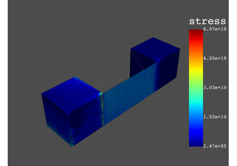
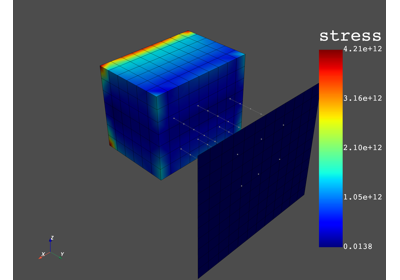
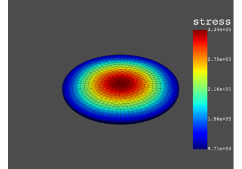
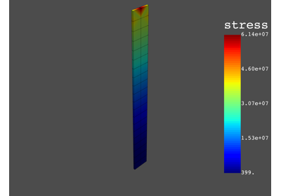

DPF-Post Analysis Types#
Here are a series of analysis type focused examples with
ansys-dpf-post module.

Static Analysis

ANSYS DPF-Post: Modal Analysis
ANSYS DPF-Post: Modal Analysis

ANSYS DPF-Post: Harmonic Analysis
ANSYS DPF-Post: Harmonic Analysis

ANSYS DPF-Post: Transient Anaysis
ANSYS DPF-Post: Transient Anaysis